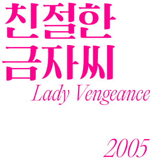
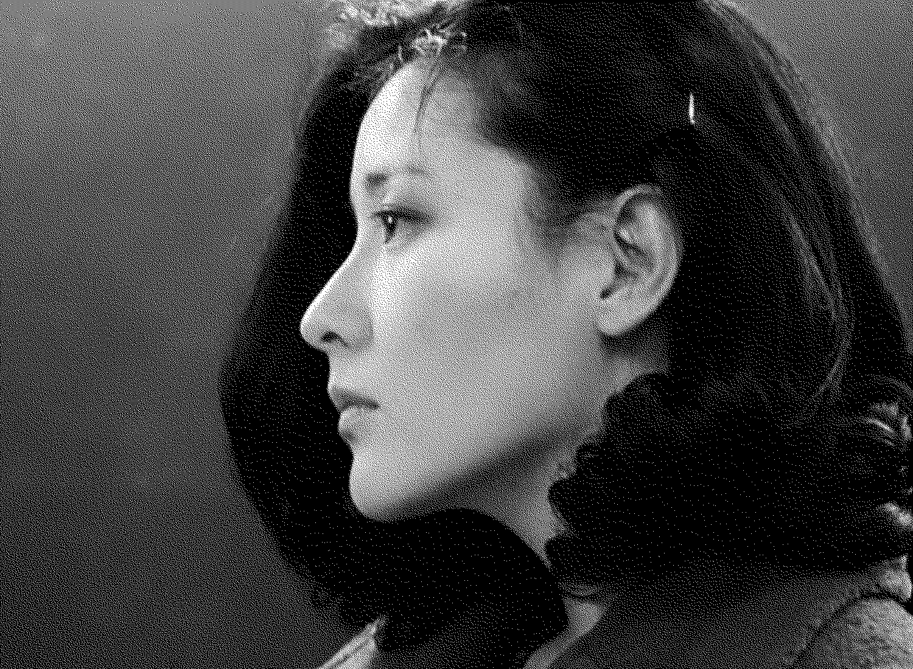
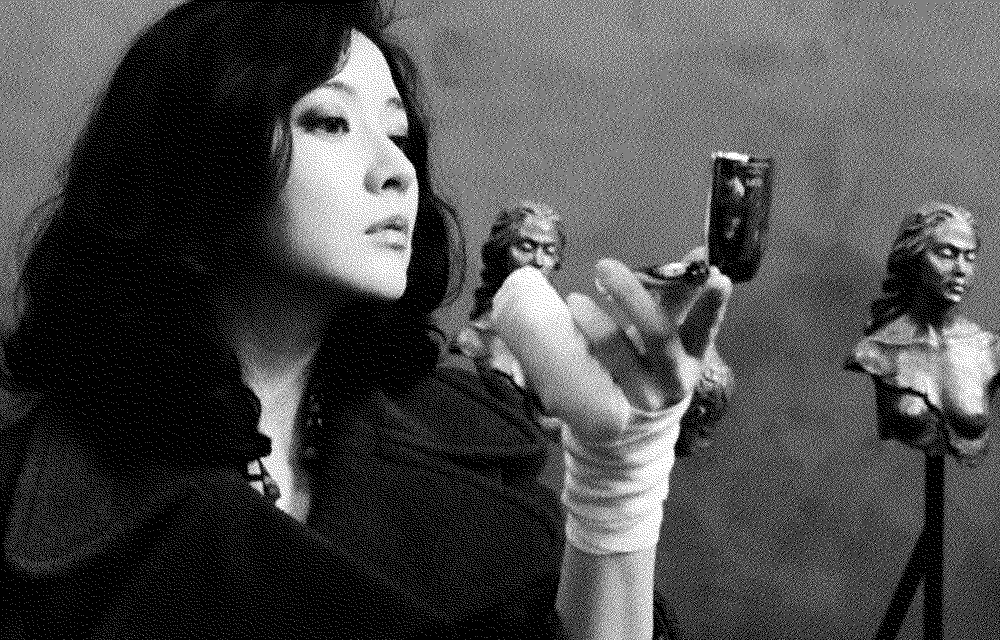
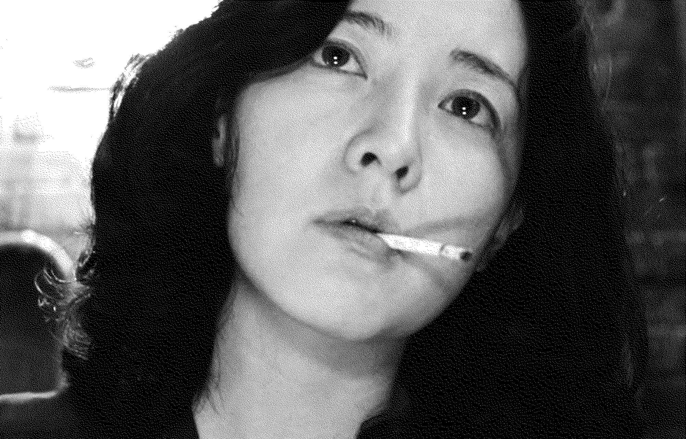

금자
복수자
친절한 금자씨
Lady Vengeance
2005년
감독 박찬욱
스릴러/드라마
132분
금자 역
이영애


금자의 첫 번째 대사
천사, 그것은 사실일까요? 과연 제 안에 천사가 깃들어 있을까요? 정말 그렇다면 제가 그토록 사악한 행위를 하는 동안 천사는 어디서 무엇을 하고 있었을까요? 전도사님의 말씀을 듣고 전 늘 그것을 생각했습니다. 그리고 깨달았습니다. 내 안의 천사는 오직 내가 부를 때만 자기의 존재를 드러낸다는 것을요. 어디 계신가요? 나와 주세요. 저 여기 있어요. 이렇게 천사를 부르는 행위, 이것을 바로 우리는 기도라고 말하는 것입니다. 사실 교도소야말로 기도를 배우기에 이상적인 장소입니다. 왜냐하면 여기서는 우리 모두가 죄인임을 알기 때문입니다. 감사합니다.
00:05:15


금자의 마지막 대사
Be white. Live white. Like this. 하얗게, 하얗게 살자고. 두부처럼.
01:48:25